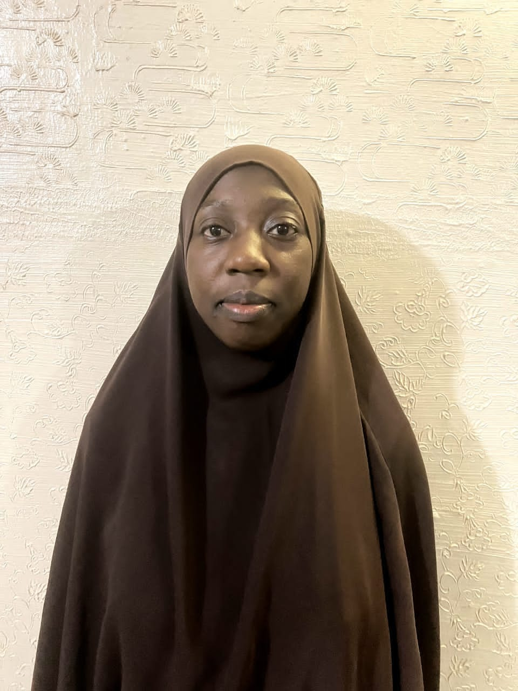

Computer Networking
Network topologies, subnetting, TCP/IP protocol architecture, dynamic routing, and switching simulation.
Computer Engineering Student · Networking & Cybersecurity Enthusiast
I am a final-year Computer Engineering undergraduate at Ahmadu Bello University, Zaria, focused on computer networking, cybersecurity, IoT architectures, and technology-driven solutions. Through academic projects, technical training, and industrial experience at MTN Nigeria, I am building practical engineering competencies to design and secure modern connected systems.
“Learning, building, and growing through technology.”

The technical engineering territory I actively build in, spanning networks, security, embedded hardware, and cloud systems.
Network topologies, subnetting, TCP/IP protocol architecture, dynamic routing, and switching simulation.
Ethical hacking fundamentals, digital defense, security posture and evaluation
Multi-VLAN enterprise simulation, Inter-VLAN routing, NAT/PAT, and ACL enforcement.
Current academic affiliation and geographical base.
Ahmadu Bello University, Zaria
B.Eng. Computer Engineering
Networking Track · 500 Level
Lagos, Nigeria
Review my detailed academic milestones, skills, project work, and full Curriculum Vitae.